El miembro superior del ser humano se conforma de 4 partes, el hombro, el brazo, antebrazo y mano, todas estas partes se encuentran unidas entre sí gracias a las articulaciones que permiten al miembro tener la capacidad de llevar a cabo movimientos finos, suaves y precisos como pueden ser agarrando objetos, golpeando o ayudando a movimientos motrices como correr, lanzar objetos, saltar, etc., a continuación se ilustran cada una de esas partes.
Dependiento de la zona del miembro superior donde se practique la amputación, determinará el nivel de amputación a tener. Aquí abajo se describen los tipos de amputaciones que puede llegar a tener el miembro superior y cómo detectarlas, toca las imágenes para obtener más información sobre cada una.
Aquí se enlistan con detalle los materiales, herramientas, hardware, software y todo lo necesario para poder construir una prótesis 3D con éxito. Los materiales y herramientas pueden variar dependiendo el modelo de prótesis que se esté desarrollando.
Los dispositivos que aquí se encuentran, a excepción de HACKberry, están desarrollados por e-NABLE, la comunidad más grande en el desarrollo de prótesis 3D para miembro superior. Estas prótesis han pasado varias pruebas realizadas por doctores y especialistas en prótesis para poder llegar al producto final. Todos los modelos son imprimibles en 3D y son de código abierto, por lo que no hay problema alguno en descargar los archivos y hacer uso de ellos.
Este es un plan de construcción de prótesis 3D basado gran parte en información tomada de e-NABLE. Se ha enriquecido con información adicional que es valiosa en la construcción de los dispositivos.
Si se siguen los pasos tal y como lo marca esta línea del tiempo se podrán producir dispositivos protésicos con éxito.
La amputación parcial de mano se da cuando se amputan alguno de los dedos o incluso todos. Esta amputación se caracteriza por mantener la palma de la mano totalmente funcional, permitiendo los movimientos de flexión y extensión que pueden ser aprovechados para colocar una prótesis 3D mecánica funcional. Estos movimientos que se muestran en la imagen de abajo deben lograr por lo menos un ángulo de 30° para que la prótesis pueda funcionar.
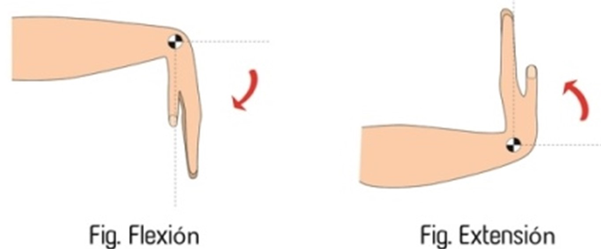
Desarticulación de mano
La amputación de la mano se da cuando se extirpa a partir de la muñeca hacia abajo, separando la palma y los dedos del antebrazo. La amputación se caracteriza por tener el codo aun en función, y gracias a esto se puede adaptar una prótesis 3D mecánica para amputación transradial. Al igual que las protesis para amputación parcial de mano, es necesario tener al menos 30° de movilidad para flexionar y extender el codo.
Amputación transradial
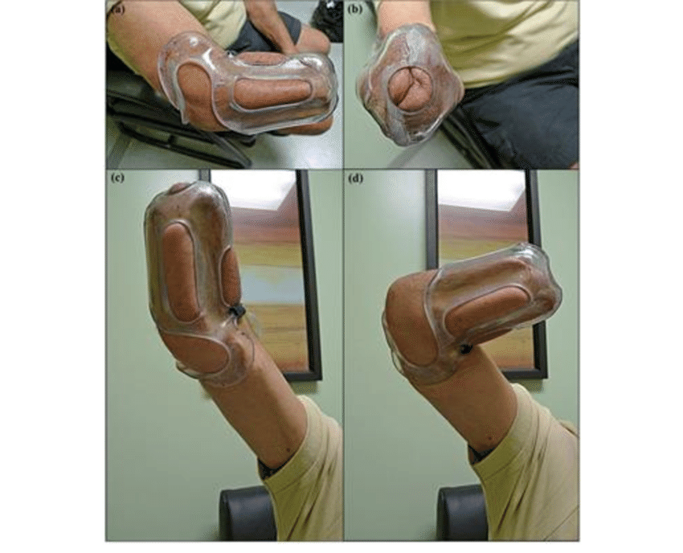
La amputación transradial se realiza por debajo del codo, dejando un pequeño muñón restante, por lo regular con este muñon aún se pueden hacer movimientos de flexión y extensión. Para poder adaptar un dispositivo protésico con este tipo de amputación, es necesario que el muñón sea funcional, mida por lo menos 10 cm y que pueda realizar movimientos de flexión de por lo menos 30°.
Desarticulación de codo
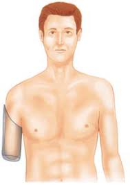
Este tipo de amputación, como su nombre lo dice, ocurre cuando hay ausencia de toda la parte del antebrazo y mano, dejando únicamente unido al cuerpo el húmero.
No existe dospositivo protésico mecanico funcional para este tipo de amputación, pero si hay brazos imprimibles en 3D que utilizan sensores de movimiento y servomotores que hacen un brazo protésico funcional con movimientos realizados electrónicamente.
Desarticulación de hombro
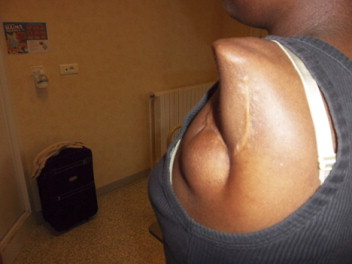
La desarticulación del hombro complica la adaptación de las prótesis, ya que hay ausencia total del brazo y no hay un muñón funcional, para este caso existen las prótesis mioeléctricas.
Amputación interescapulotorácica
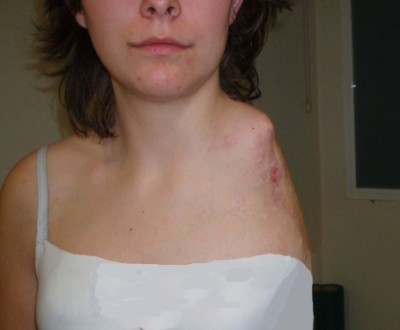
Este tipo de amputación es la menos común de todas las amputaciones de brazo, pues consiste en extirpar la clavícula, el omóplato y el humero, dejando el cuerpo totalmente sin extremidad superior y antiestético. para este tipo de amputación se utilizan prótesis mioeléctricas especiales.
Hardware necesario para imprimir prótesis 3D
El desarrollo de prótesis construidas con tecnología 3D requiere forzosamente una computadora para poder manipular los modelos tridimensionales del dispositivo protésico e imprimirlo. Aquí se enlistan los requisitos necesarios para poder realizar dichas tareas del desarrollo.
• Procesador: 2 Ghz con doble núcleo de 64 bits con soporte SSE2
• Memoria RAM:4 GB
• Pantalla: 1280 × 768 (WXGA)
• Tarjeta gráfica: 1 GB de RAM, OpenGL 3.3
• Mando: Ratón, trackpad o lápiz con tableta
Para checar si tu computadora windows cumple con los reuisitos mínimos puedes dar click aquí y escanear tu computadora con el software CPU-Z.
Para quienes utilizan computadoras de Apple, cualquier computadora que trabaje con Mac OS Versión 10.13 o superior es capáz de realizar las tareas para la produción de prótesis.
En caso de utilizar fotogrametría para escanear el miembro a protetizar, es necesaria una computadora con hardware más potente, mínio con los siguientes requisitos:
• Procesador: Intel o AMD recientes, no más de 6 años de antigüedad y con arquitectura de 64 bits.
• Memoria RAM: 8 GB
• Disco duro: 400 MB para la instalación de Meshroom, más espacio para los archivos creados.
• Tarjeta gráfica: NVIDIA con CUDA 2.0 habilitado (Arquitectura Unificada de Dispositivos de Cómputo).
• Mando: Ratón, trackpad o lápiz con tableta
Impresoras 3D ideales para imprimir prótesis 3D
Impresoras 3D ensambladas Es recomendable utilizar impresoras ensambladas para hacer impresión de prótesis 3D ya que estos dispositivos tienen tecnologías avanzadas que facilitan en gran medida las impresiones y muy raras veces pueden ocurrir errores al momento de imprimir. La desventaja de estas máquinas es que tienen un precio muy elevado que supera los USD $1000. Las marcas de impresoras que se recomiendan para imprimir prótesis 3D son:
• Core XY
• Prusa
• Mendel
• Delta
• Smartrap
Impresoras no ensambladas
Existen alternativas a las impresoras mencionadas anteriormente que ofrecen impresiones de calidad aceptable por muy bajos costos. La desventaja aquí es que son dispositivos que necesitan ser ensamblados por el usuario que las adquiere y se necesita tener un poco de experiencia y conocimiento para nivelar la impresora, cambiar componentes y hacer mantenimiento en general en la máquina. Aún con estas desventajas se puede trabajar, solo se necesita dedicarle horas de estudio al modelo que se ha adquirido para imprimir con éxito.
Algunos modelos de impresoras no ensambladas son:
• Anet ET4
• Anet A8
• Creality Ender 3/ 3 v2/ 3 pro
• Creality Ender 5/ 5 pro
Estos modelos de impresoras 3D no ensambladas son recomendables ya que muchas personas que tienen una impresora de este tipo son de los modelos mencionados, lo que creó comunidades que crecen diariamente y en caso de tener algun problema con la impresora, facilmente se podrá encontrar información o ayuda de otros usuarios que han presentado los inconvenientes en algún otro momento.
Requerimientos para la impresión de prótesis 3D
Los expertos recomiendan tener una impresora mínimo con las siguientes características:
• Tecnología de impresión: FDM
• Tamaño de área de impresión: 20cm x 20cm x 20cm para manos protésicas, 30cm x 30cm x 30cm. para brazos protésicos.
• Materiales de impresión soportados: PLA
• Boquilla: 0.3 o 0.4 mm
Software utilizado en la construcción de prótesis
El software que aquí se menciona es de código abierto o con versiones gratuitas. Existen alternativas con más funcionalidades pero se debe pagar por el uso de esas herramientas.
Software para obtención de escala
• Blender
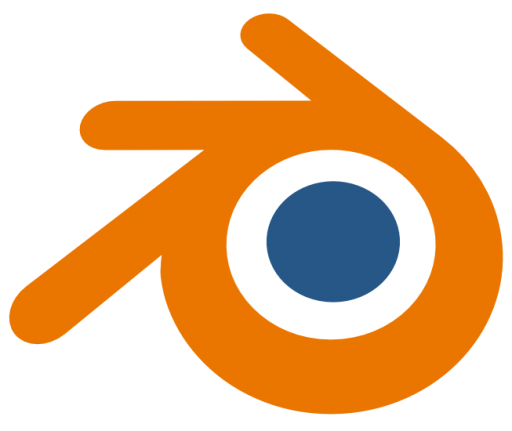Blender es un software gratuito que permite crear visualizaciones tridimensionales, tales como imágenes fijas, animaciones 3D, efectos visuales, edición de vídeo, iluminación, renderizado, creación y manipulación de gráficos tridimensionales.
Entre todas las funcionalidades que ofrece este software, se utiliza Blender para la manipulación del tamaño los archivos STL de los modelos protésicos con la finalidad de obtener el valor de la escala con la que se deben imprimir las piezas de la prótesis ya sea por el método de Peter Binkley o por escaneo 3D. Descargar Blender
Software para escaneo 3D
• Scandy Pro
Scandy Pro permite a los usuarios obtener el modelo tridimensional de un objeto de una manera muy sencilla con un teléfono celular, para esto se debe tener un dispositivo: iPhone
• XR, X, XS o XS Max
• 11, 11 Pro o 11 Pro Max.
• 12, 12 Pro o 12 Pro Max. iPad Pro
• 2018, 2019 o 2020.
Scandy Pro es una aplicación gratuita que tiene opciones de pago. La aplicación ofrece la primer semana cuando se descarga libre para poder hacer escaneos ilimitados, después de la primer semana ya solo se podrá hacer un escaneo gratuito cada 7 días. En caso de querer volver hacer escaners ilimitados se puede hacer un pago de $39.00 MXN para una semana o $2499.00 MXN para usarlo ilimitadamente de por vida. Descargar Scandy Pro
• Meshroom
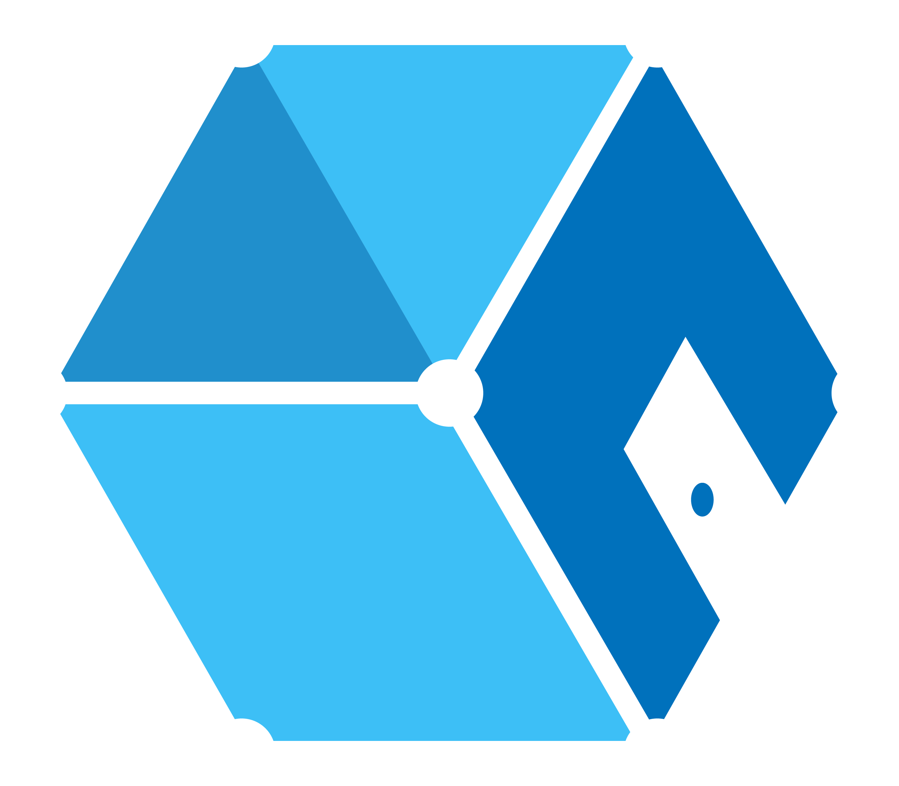Meshroom es un software de reconstrucción 3D gratuito y de código abierto basado en AliceVision, lo cual es un marco de visión por computadora fotogramétrico que proporciona algoritmos de reconstrucción 3D a partir de fotografías. Esta aplicación es solo una opción si es que se opta por la fotogrametría para escanear el miembro. Descargar Meshroom
Software para generar G-Code
• Ultimaker Cura
Ultimaker Cura un software gratuito y de código abierto de los más populares del mundo en el ámbito de la impresión 3D con millones de usuarios que lo respaldan por su sencillez en la interfaz y facilidad al momento de utilizarlo.
Este programa facilita la conversión de archivos con modelos tridimensionales en varias capas, generando un código G con instrucciones de movimientos que tiene que realizar la impresora 3D para generar figuras con el material que se le haya colocado. Éste programa acepta diversos tipos de archivos compatibles para poder imprimirlos, como lo son: STL, OBJ, X3D, 3MF y BMP. Descargar Cura
Equipo fotográfico
El equipo fotográfico es esencial para obtener las medidas del miembro y escalar los modelos protésicos.
Para el método de Peter Binkley es necesario tomar fotografías del miembro desde la parte posterior y por los lados para poder trabajarlas en Blender.
Si se habla de fotogrametría, es necesario tomar por lo menos 50 fotografías desde diferentes ángulos del miembro para posteriormente recrear el modelo 3D con ayuda de Meshroom.
En caso de recurrir al método de escaneo de miembro con un dispositivo móvil las fotografías son necesarias para tener una referencia del tamaño de la extremidad y adaptar el modelo tridimensional al mismo tamaño de las fotografías.
Las fotografías pueden ser capturadas con cualquier dispositivo como una cámara digital o un dispositivo móvil, siempre y cuando cuente con por lo menos 12 megapíxeles de resolución.
Materiales necesarios para crear prótesis
Filamentos
Los filamentos para impresión 3D son hilos de diferentes polímeros que vienen enrollados en forma de carrete al rededor de un cilindro de plástico. Existe gran variedad de materiales, cada uno con sus características y usos propios. Aquí se menciona el material principal para casi todas las prótesis que se imprimen en 3D.
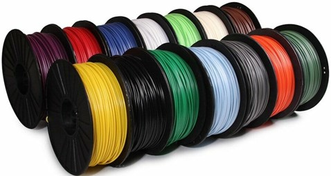 • PLA
Este filamento está compuesto por un polímero biodegradable procedente del ácido láctico, este compuesto químico es tomado de la naturaleza que se encuentra en semillas como el maíz, trigo, remolacha, u otros productos que contengan suficiente almidón. Al ser un material natural, no tóxico y fácil de imprimir es uno de los más utilizados en la impresión 3d.
Ventajas
• Facilidad de impresión.
• No necesita de una cama caliente forzosamente.
• Es muy estable.
• La velocidad de impresión es más rápida que con otros materiales.
• Se obtiene de recursos renovables.
• Material reciclable.
Desventajas
• Tiene poca resistencia a la altas temperaturas (se empieza a deformar a los 60ºC).
• Poca resistencia mecánica a comparación de otros materiales.
Consejos de impresión
• Imprimir a 198 ºC aproximadamente o lo que indique el fabricante del filamento.
• Para piezas pequeñas y piezas finas se recomienda utilizar ventiladores de capa para evitar que la pieza se deforme o presente un mal acabado.
• Para evitar que la pieza se despegue de la base se puede usar cinta adhesiva, laca, o silicón caliente.
• Aumentar la temperatura de 3 ºC a 5 ºC en filamentos de color oscuro.
• Para la impresión de prótesis usar PLA sin olores o tratamientos químicos.
Velcro
Estas tiras son muy usadas en diferentes ámbitos, sobre todo en ropa y calzado, pero también son indispensables para poder mantener las prótesis 3D en su lugar, pudiendo ajustarlas a diferentes grosores del miembro donde se coloca sin la necesidad de cambiar la cinta para ajustar la prótesis si la persona adelgaza o gana volumen. Las tiras ideales para casi cualquier tipo de prótesis son de 12'' x 1''
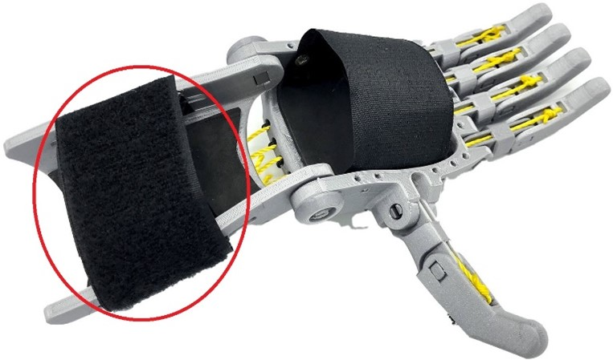
Tornillos
Se utilizan tornillos de acero para algunos modelos de prótesis para reforzar las articulaciones, y mantener los componentes fijos o para tensar los cordones. Se les llama tornillos de palma a los tornillos metálicos que ayudan a mantener la espuma sobre la palma en las prótesis para amputación parcial de mano, sin que esta rompa o desprenda fácilmente. Los tensores son tornillos especiales que sirven para regular la tensión de los cordones de la prótesis según lo requiera el usuario.
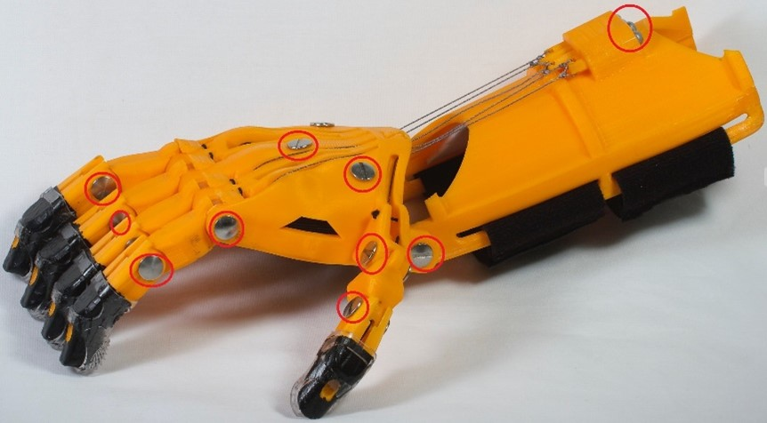
Cordónes
Para las prótesis mecánicas funcionales se utilizan cordones resistentes que van conectados desde los dedos protésicos, hasta los tornillos tensores de las prótesis. Gracias a estos cordones es posible abrir y cerrar el dispositivo protésico para agarrar objetos sin complicación, gracias a los movimientos de flexión de la muñeca o el muñón del antebrazo. Se ha visto que algunas personas utilizan hilo para pescar con éxito, ya que es un hilo muy delgado y resistente a la vez que difícilmente hace que se estire.
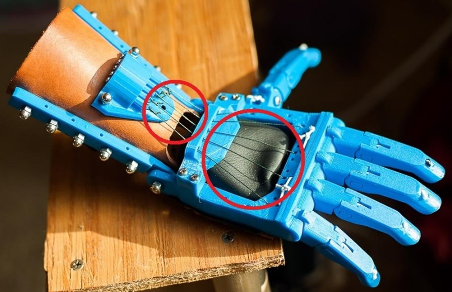
Espuma
Se coloca en las partes donde la prótesis tiene contacto con la piel para hacerla más suave al utilizarla y evitar lesiones o yagas por rozadura. También se coloca sobre la palma de las prótesis para amputación parcial de mano.
Aunque hay espuma especial para las prótesis, se puede utilizar fomi en su lugar y funcionará de la misma manera.
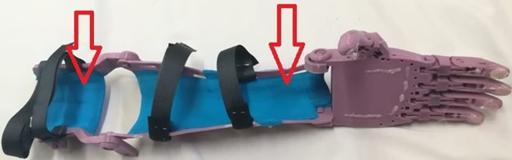
Empuñaduras de gel
Son pequeños dedales de gel especialmente diseñados para las prótesis 3D que se colocan en las puntas de los dedos de las prótesis, con la finalidad de aseguran un mejor agarre a las superficies u objetos lisos. Las empuñaduras de gel son muy flexibles por lo que se adaptan a cualquier tamaño de dedo.
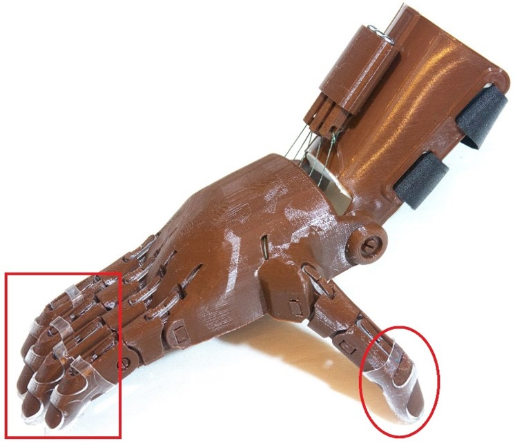
Herramientas necesarias para construir prótesis 3D
Taladro y brocas
Se puede presentar la situación en donde, aunque se haya escalado el dispositivo correctamente, los orificios donde que tienen las prótesis para introducir tornillos o pines algunas veces podrían imprimirse más pequeños de lo normal, para este caso se debe utilizar un taladro con una broca ligeramente más pequeña que los tornillos que se van a colocar, y de esta manera agrandar el o los orificios que tienen el error. Se debe evitar forzar introducir el tornillo sin antes haber agrandado el orificio con la herramienta correcta, ya que la prótesis se podría romper.
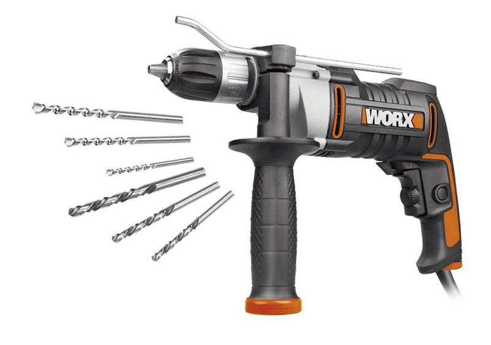
Lijas
La lija se debe ocupar principalmente para eliminar los bordes puntiagudos o filosos que puedan quedar después de la impresión. Para esto se utilizan lijas gruesas de grano 200, y se puede continuar con lijas más finas como el grano 4000 hasta eliminar estos defectos de impresión. El lijado se debe realizar con movimientos circulares opuestos al grano y de las líneas de las capas de impresión. Si la prótesis no presenta errores de impresión o no tiene partes puntiagudas se puede ocupar la lija para suavizar la prótesis a gusto.
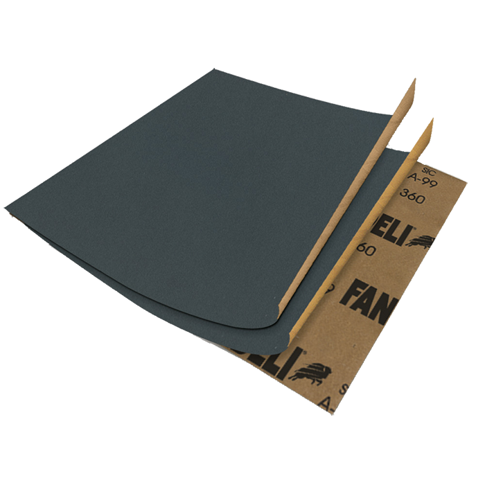
Pinzas de presión
Para los dispositivos protésicos mecánicos funcionales, al momento de tensar los cordones es necesario mantener las prótesis con flexiones en un ángulo de 30°. La pinza a presión mantiene la prótesis en la posición correcta para poder trabajar los cordones sin que se mueva.
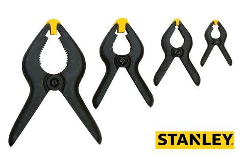 En caso de no contar con unas pinzas a presión como las mostradas anteriormente se pueden utilizar unas de metal, solo se debe tratar de no presionar de más la prótesis porque podría llegar a romperse.
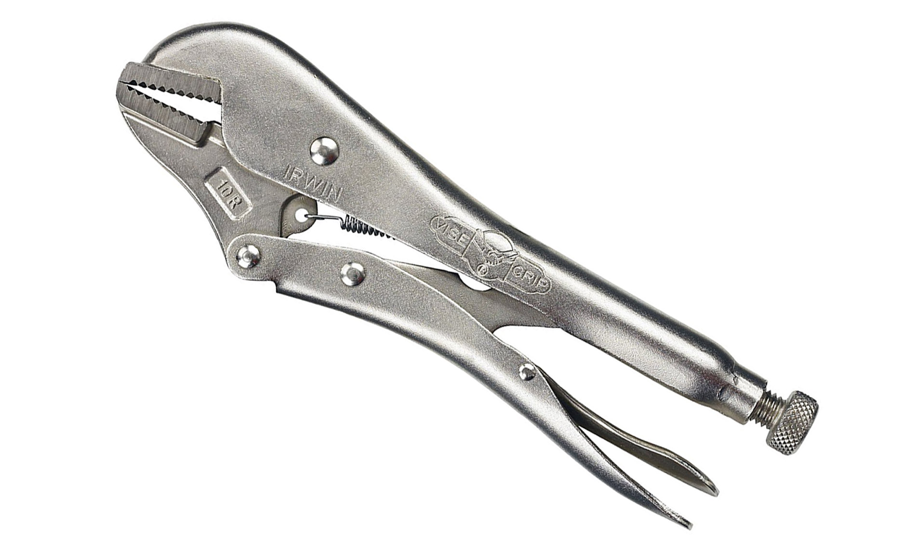
Tijeras
Las tijeras son de gran ayuda en la construcción de prótesis 3D para cortar la esponja que se coloca dentro del cuerpo del dispositivo protésico, así como también para cortar los segmentos de cordones que se coloca para abrir los dedos.
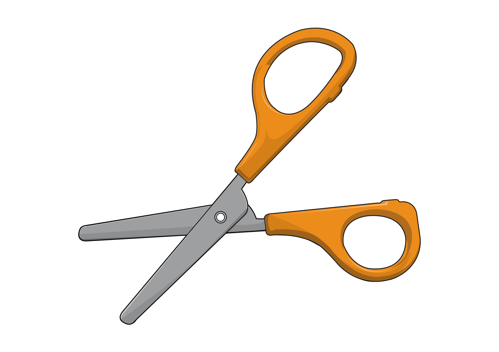
Desatornillador
Todas las prótesis 3D mecánicas llevan por lo menos un tornillo, ya sea para simular las articulaciones, para mantener la espuma de la palma en su lugar o para tensar los cordones, en cada uno de estos casos es necesario tener un desatornillador para introducir o extraer un tornillo en la prótesis.
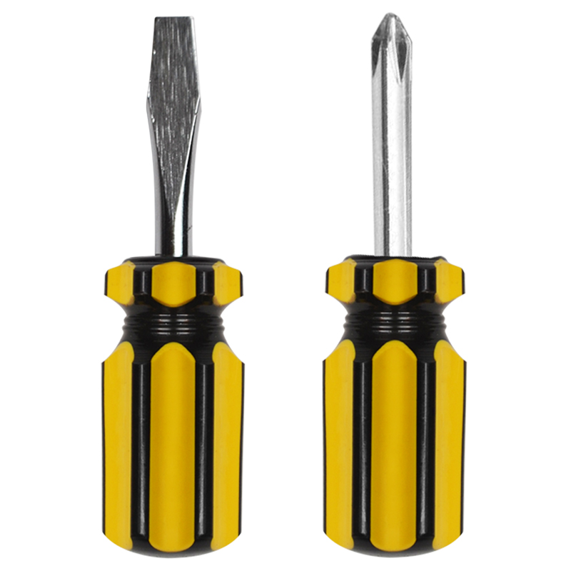
Martillo
El martillo es utilizado para colocar los pines impresos que llevan algunos dispositivos en las articulaciones en lugar de tornillos de metal. Se recomienda utilizar el martillo más pequeño posible y utilizarlo con fuerza moderada para evitar estropear la prótesis.
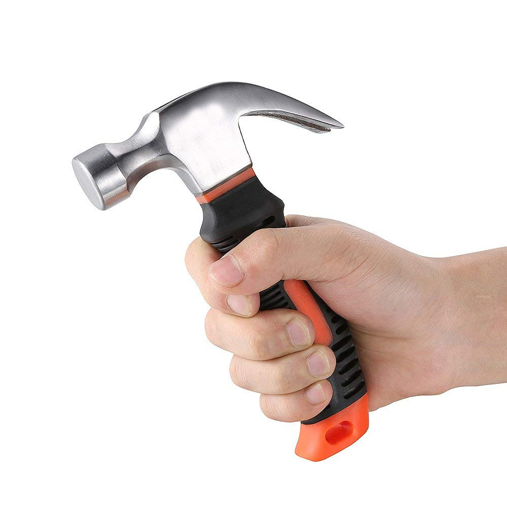
Prótesis Cyborg Beast
Diseñador: Jorge Zuniga, Ph.D – e-NABLE
Madurez:
Estable
Costo de materiales:
Entre $600.00 y $1000.00 MXN
Popularidad:
Media
Dificultad:
Media
Fuerza de presión:
Alta
Este es un dispositivo de muñeca. Para poder utilizar este modelo, el usuario debe tener una muñeca funcional y suficiente palma para empujar el dispositivo y así forzar los dedos a cerrar cuando la muñeca se doble.
Fue desarrollado por Jorge Zuniga y su grupo de investigación en la Universidad de Creighton. Cyborg Beast fue uno de los primeros diseños de código abierto de e-NABLE. Sus características incluyen puntas de los dedos texturizadas para un mejor agarre, uniones roscadas de Chicago, enrutamiento de cable protegido a través del cuerpo de la palma y un sistema de tensión integrado en el guantelete.
Cyborg Beast tiene licencia de Creative Commons-Attribution-Non-Commercial, lo cual da permiso de:
• Compartir: copiar y redistribuir el material en cualquier medio o formato.
• Adaptarse: remezclar, transformar y construir sobre el material.
Pero siempre otorgando el crédito correspondiente a quien corresponda y proporcionando un enlace a la licencia e indicar si se realizaron cambios en el modelo 3D. De igual manera no se puede utilizar esta prótesis con fines comerciales.
Este modelo de prótesis es muy conocido en la comunidad de e-NABLE, es un modelo de prótesis muy fácil de elaborar y que ha pasado por varias modificaciones gracias a la retroalimentación de las personas que lo han utilizado, por lo que tiene un alto grado de madurabilidad. Se puede decir que es muy confiable su utilización por lo mencionado anteriormente.
Para poder desarrollar una prótesis Cyborg Beast basta con desembolsar no más de 50 dólares del bolsillo.
Este es un dispositivo de muñeca. Para poder utilizar este diseño, el usuario debe tener una muñeca funcional y suficiente palma para empujar el dispositivo para forzar los dedos a cerrar cuando la muñeca está doblada.
Como puntos positivos, este diseño tiene un buen tiempo siendo conocido en la comunidad e-NABLE por lo que es confiable su uso y los costos de producción no superan lo 50 dólares en materiales.
Como puntos de mejora, la dificultad que conlleva desarrollar este modelo es media, esto dado por el diseño donde se busca una prótesis limpia donde no se vean mucho las conexiones, tuercas y demás componentes que pueden ser fácilmente visibles en otros modelos de prótesis. Este modelo tiene una fuerza de presión de las más bajas en dispositivos e-NABLE.
Diseñadores: Jason Bryant, John Diamond, Scott Darrow, and Andreas Bastian e-NABLE
Madurez:
Estable
Costo de materiales:
Entre $600.00 y $1000.00 MXN
Popularidad:
Alta
Dificultad:
Baja
Fuerza de presión:
Alta
Este es un dispositivo de muñeca. Para utilizar este diseño, el usuario debe tener una muñeca funcional y suficiente palma para empujar el dispositivo para forzar los dedos a cerrar cuando la muñeca está doblada.
Esta es una remezcla de la mano original de e-NABLE Phoenix de Jason Bryant con componentes de repuesto de John Diamond, Scott Darrow y Andreas Bastian.
Se puede asegurar, según la página de e-NABLE que es la prótesis para amputación parcial de mano más barata, popular, madura, fácil de elaborar, y con un alto grado de presión. El único punto no tan favorable es que utiliza componentes propios desarrollados por los diseñadores y que pueden ser un poco difíciles de conseguir estando en México.
Este es un dispositivo de muñeca. Para utilizar este diseño, el usuario debe tener una muñeca funcional y suficiente palma para empujar el dispositivo y forzar los dedos a cerrar cuando la muñeca está flexionada.
Esta mano está destinada especialmente a ser una mano inicial para niños mayores de cuatro años sin dedos, con una palma pequeña y cierta capacidad para flexionar y extender la muñeca. Solo cuenta con dos dedos y un pulgar cortos que reducen la posibilidad de sacar el ojo.
Al ser una mano pequeña especial para niños tiene la ventaja de que es muy barata a comparación de otras prótesis para amputación parcial de mano. De igual manera ya es madura y conocida por muchas personas, es de las más fáciles de armar y cuenta con una gran presión de agarre, construir esta prótesis debe ser tarea fácil.
Este es un dispositivo accionado por el codo. Para utilizar este diseño, los usuarios deben tener un codo funcional que se doble para obligar a los dedos a cerrar la mano.
Este diseño es la evolución del Unlimbited Arm, por lo que es un brazo protésico maduro y muy económico de desarrollar a pesar de sus grandes dimensiones, se dice que no se debería ocupar más de 50 dólares.
Como puntos de mejora se tiene que la presión de agarre no es muy fuerte, esto debido a su gran tamaño y a que es accionada por codo, además de que tiene una dificultad media para poder replicar este modelo en la impresora 3D.
Con base en la siguiente imágen determinaremos el nivel de amputación para posteriormente adaptar una prótesis.
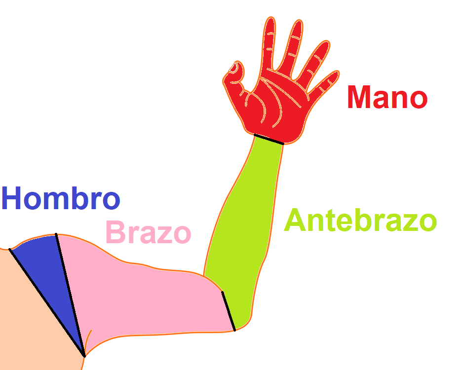
Amputaciones en la mano
Se habla de una amputación parcial de mano cuando falta un dedo o más, pudiendo faltar incluso todos. Como se muestra en la imágen de arriba, la mano está marcada con color rojo. En caso de que el paciente presente algunas de las características anteriormente mencionadas, se debe asegurar de que la palma de la mano cuenta con los movimientos de flexión y extensión para adaptar una prótesis.
Dando click aquí se debe verificar si se trata de una amputación parcial de mano y si cumple con las características para adaptar una prótesis.
Amputaciones en el antebrazo
Si el paciente presenta una amputación en la zona marcada de color verde, según la imágen anterior, se puede dar alguna de las siguientes dos amputaciones.
se debe verificar si se trata de una amputación de mano o si ha habido una amputación transradial y verificar si el miembro aún cumple con las funciones de cada una de las amputaciones para poder adaptar una prótesis.
• Desarticulación de muñeca
• Amputación transradial
Amputaciones en el brazo
Si el paciente presenta una amputación en la zona marcada de color rosado, según la imágen anterior, puede que presente alguna de las siguientes dos amputaciones.
se debe verificar si se trata de una amputación de mano o si ha habido una amputación transradial y verificar si el miembro aún cumple con las funciones de cada una de las amputaciones para poder adaptar una prótesis.
• Desarticulación de codo
• Amputación transhumeral, que es cuando el húmero se ha visto afectado y se ha tenido que extraer una parde de él
Amputaciones en el hombro
Las amputaciones en el hombro son presentes cuando el húmero es desprendido del tronco, en la región marcada con color azul. Se puede dar de dos maneras, las cuales son:
• Desarticulación de hombro
• Amputación interescapulotorácica
Elección del dispositivo protésico
De aceurdo al nivel de amputación detectado en el paciente, se debe elegir un dispositivo protésico.
Se recomienda elegir el dispositivo que utilice materiales que sean fáciles de conseguir Aquí puedes elegir tu dispositivo a desarrollar
Preparación de herramientas, materiales, software y hardware
Antes de iniciar a construir una prótesis es importante tener listas algunas cosas como:
• Impresora 3D con los requisitos mínimos dependiendo el tipo de prótesis a desarrollar
• Mínimo 500 gramos de filamento PLA.
• Computadora con los requisitos mínimos para correr los programas. verificar
• Blender instalado en la computadora.
• Ultimaker Cura instalado en la computadora.
• Meshroom instalado en la computadora (en caso de utilizar fotogrametría).
• Dispositivo móvil con cámara o cámara digital de mínimo 12 Mpx.
• Aplicación Scandy Pro instalada en dispositivo iPhone en caso de escaner 3D.
• Herramientas básicas para la construcción.
• Materiales específicos dependiendo el dispositivo.
Para evitar interrupciones o atrasos, se recomienda tener todo listo antes de iniciar con la fase de impresión.
Obtención de escala
La obtención de escala es la fase donde se obtienen las medidas de la extremidad a protetizar, para posteriormente redimensionar cada pieza del dispositivo protésico al tamaño justo del miembro con ayuda de programas informáticos para que la impresión resulte a la medida necesaria. Existen varios métodos como:
• Método Peter Binkley
• Escaneo 3D de miembro
En este enlace se puede descargar el archivo necesario para escalar dispositivos mecánicos funcionales por método Peter Binkley o Escaneo 3D de miembro.
Ejemplo para obtener escala escaneando el miembro con un smartphone:
Impresión de prótesis
Con base en la escala obtenida en la fase de obtención de escala, se procede a imprimir todas las piezas del dispositivo potésico con la misma escala uniforme, como se muestra en el siguiente tutorial.
Postproceso
En esta fase se preparan las impresiones para ser ensambladas. Se deben seguir los siguientes pasos para hacer un postproceso exitoso.
• Quitar soportes.
• Observar errores de impresión y solucionarlos.
• Verificar que ninfuna pieza tenga acabados puntiagudos o punzocortantes.
• Termoformado.
Ejemplo de postproceso.
Ensamblaje
En construcción, estará disponible pronto.
Colocación de la prótesis
En construcción, estará disponible pronto.
Hombro y brazo
Hombro
El hombro está compuesto por 5 articulaciones, uniendo 4 huesos diferentes como el húmero, clavícula, escápula y esternón, gracias a la coordinación de las articulaciones y los huesos, el hombro permite realizar movimientos complejos al brazo de manera correcta. En la figura de abajo se muestran los huesos mencionados anteriormente.
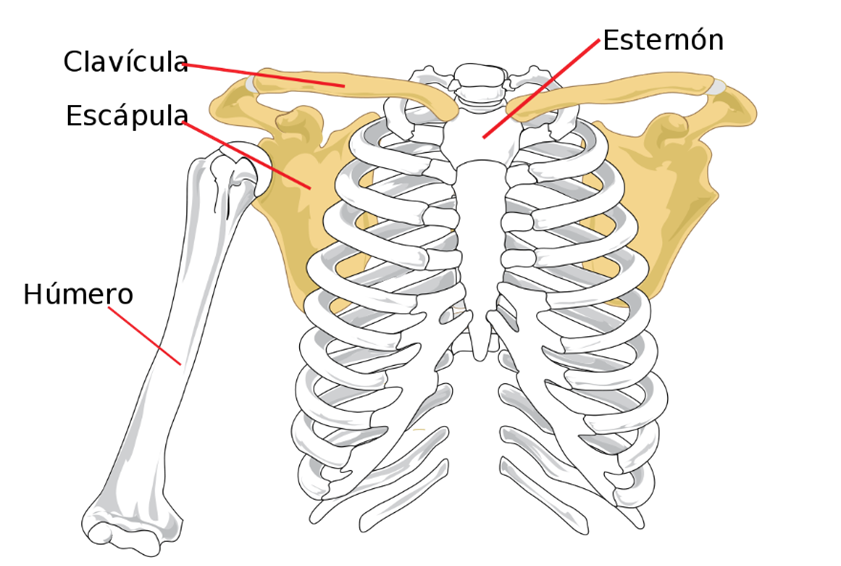
Brazo
Es el primer y más largo segmento del miembro superior, independiente del tronco; comenzando en el hombro y terminando en el codo, conectando ambas articulaciones. El brazo se compone de un solo hueso llamado húmero. Los diferentes músculos conectados al humero permiten al brazo tener diferentes tipos de movimientos que son esenciales para realizar distintas actividades, estos movimientos son: flexión, hasta 180°; extensión, entre 45° y 50°; abducción y aducción; rotación externa hasta 80° y rotación interna hasta los 110°.
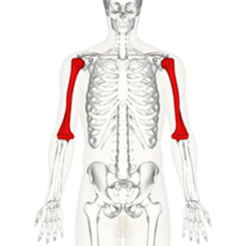
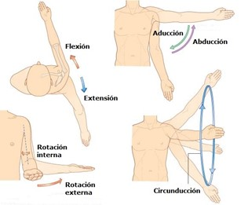
Antebrazo
Es el segundo segmento más largo del miembro superior, inicia en el codo y termina en el carpo, conectando ambas articulaciones. El cúbito, también conocido como ulna es el hueso que estabiliza el antebrazo, este es el más largo de los huesos de dicho segmento y se une al húmero mediante, el olecranon. Gracias a estas uniones el antebrazo se puede mantener estable y se pueden producir los diferentes movimientos de flexión y extensión del codo.
El radio es una estructura ósea que está localizada en la zona lateral del antebrazo, justamente entre la articulación del codo y de la muñeca, y al lado del cúbito; este hueso es importante ya que gracias a él y a los distintos músculos que en él se insertan, son posibles los movimientos de pronación y supinación.
Mano
Es la parte del miembro superior distal al antebrazo, se compone del carpo, la palma y el dorso; y los dedos, entre los que se cuenta un pulgar oponible.
La mano se caracteriza por estar abundantemente inervada con numerosas terminaciones sensibles al tacto, el dolor y la temperatura; con ella es que el ser humano puede agarrar, sostener y sentir las texturas de los objetos, entre muchas otras acciones.
Este segmento del miembro superior es el más complejo de los 3, debido a la gran cantidad de huesos, los cuales se dividen en tres segmentos: los huesos carpianos del carpo; subdivididos a su vez en filas distal y proximal, los metacarpianos de la palma y las falanges de los dedos. Los huesos junto con los músculos y sus terminaciones nerviosas hacen que la mano tenga gran versatilidad de movimientos con alto grado de precisión.
La muñeca de la mano permite realizar 4 tipos de movimientos, los cuales son: flexión, extensión, abducción y aducción.